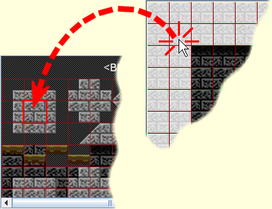

You should enter the directory where your executable is generated. For instance, if your game's resources are arranged in the same manner as the structure presented in Tutorial 1 - Basic Qaf Setup, the base path would be the project's Debug directory.
The base path can be changed later by clicking File -> Change base path.
The Editor will start with a default 640x480 room. The screen, in turn, is further divided into the elementary structural components of the game's environment: The obstacle blocks. The level designer is allowed to choose from a set of primitives when outlining the backgrounds' structure; these are visible in the Editor's lower-left panel. You can select a primitive by clicking on it, and then place it on the room's grid by "drawing" with the left mouse button.
With the floor and walls set up, it's time to draw the actual backgrounds.
Click on the Room menu and choose to create a New BG layer. You should see the following dialog:
Most of these elements are pretty self-explanatory. As noted above, the source image must be placed somewhere within the base path's subdirectories. (If you're following the previous tutorial, that would be Debug, and you'd have to copy the image files into that directory.)
Go ahead and create three background layers with the following parameters:
| Source image | Parallax factor | Tile size |
|---|---|---|
| background00.png | 1.0 x 1.0 | 32 x 32 |
| background01.png | 0.8 x 0.8 | 320 x 240 |
| background_moon.png | 0 x 0 | 640 x 480 |
You will notice that a tab is added to the lower-left panel every time you add a background layer. Clicking on a tab displays the tiles stored in that layer, and allows you to click-select-and-click-draw like you did with the obstacle blocks. Now, let your creative side run loose... or just replicate the room below:

|
You'll notice I placed the tiles on layer #0 so that they would overlap the obstacle blocks. This is deliberate, and the reason will become clear when we deal with collisions in tutorial #6.
OK, the room is ready. Save it as tut02.qr in the same directory as your executable and exit the Room Editor.
// Set up the environment: Environment::initialize( false, true ); // Load the room: Environment::loadRoom( "tut02.qr" );
Other than, that, very little has changed in the code from the first tutorial.
See the full source code for this tutorial in the file: tutorials/tutorial02.cpp
 1.5.1-p1
1.5.1-p1